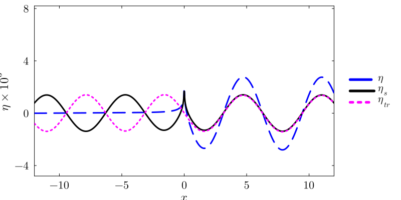

Pure Gravity — Zero Capillarity Limit (Manuscript §4.1)
Setting $\alpha = 0$ removes capillary forces entirely. The dispersion simplifies to $\chi(k) = \sqrt{\beta k}$ and the steady-state integral acquires a single Cauchy principal-value pole at $k = \beta$. This page presents the full analytical decomposition into $T_0$–$T_4^\pm$ terms and an independent numerical CPV verification.
Below eqns. (4.1) and (4.2a,b,c) are obtained by substituting $\alpha=0$ in eqn. (3.8) in the manuscript,
\[\eta(x,t) = \eta_{s}(x) + \eta_{tr}^{(1)}(x,t) + \eta_{tr}^{(2)}(x,t) \tag{4.1}\]
\[ \begin{align} \dfrac{\eta_{s}(x)}{F_0} &\equiv \dfrac{1}{2\pi\left(1+\rho_r\right)}\int_{-\infty}^{\infty}dk\; \dfrac{\exp\left(ikx\right)}{|k| - \beta},\quad 0 < \beta \leq 1 \nonumber\\ \dfrac{\eta_{tr}^{(1)}(x,t)}{F_0} &\equiv - \dfrac{1}{4\pi(1-\rho_r)}\int_{-\infty}^{\infty}dk\;\dfrac{k\;\exp\left[-i\left(k(t-x) + t\sqrt{\beta|k|}\right)\right]}{k+ \sqrt{\beta|k|}}, \nonumber\\ \dfrac{\eta_{tr}^{(2)}(x,t)}{F_0} &\equiv - \dfrac{1}{4\pi(1-\rho_r)}\int_{-\infty}^{\infty}dk\;\dfrac{k\;\exp\left[-i\left(k(t-x) - t\sqrt{\beta|k|}\right)\right]}{k- \sqrt{\beta|k|}}. \end{align} \tag{4.2a,b,c}\]
It may be further shown using principal value techniques that (see proof here)
\[\frac{\eta_s(x)}{F_0} = \frac{1}{\pi(1+\rho_r)}\left[-\pi\sin\!\left(\beta|x|\right) + \int_0^\infty \frac{y\,e^{-|x|y}}{\beta^2+y^2}\,dy\right], \quad 0<\beta\leq1,\; -\infty<x<\infty \tag{4.3}\]
In expression (4.3), $\eta_{s}(x)$ is a symmetric function of $x$, implying a symmetric response upstream and downstream of the forcing at $x=0$. However, a contribution to the steady-state also comes from the time-dependent term in eqns. (4.2b),(4.2c). As shown in the proof(here) these transient terms may be further simplified to obtain the following analytical representation valid for all $x,t$ i.e.
\[\eta_{\mathrm{tr}}(x,t) \equiv \eta_{\mathrm{tr}}^{(1)}(x,t) + \eta_{\mathrm{tr}}^{(2)}(x,t) = \left\{\mathbb{T}_1(x) +\mathbb{T}_2(x,t) +\mathbb{T}_3(x,t) +\mathbb{T}_4(x,t)\right\}F_0, \tag{4.4a}\]
where,
\[\mathbb{T}_1(x) \equiv \mp\frac{1}{1+\rho_r}\sin(\beta x) \tag{4.4b}\]
\[\mathbb{T}_2(x,t) \equiv -\frac{4\beta^{-1}}{\pi(1+\rho_r)} \int_0^\infty dv\; v^2 \frac{\exp\!\left(\mp2av^2\pm2bv\right)}{\beta+\left(2v-\beta^{1/2}\right)^2} \left[\beta^{1/2}\cos\!\left(\beta^{1/2}tv\right) \pm \left(2v-\beta^{1/2}\right)\sin\!\left(\beta^{1/2}tv\right)\right] \tag{4.4c}\]
\[\mathbb{T}_3(x,t) \equiv \frac{\beta^{-1/2}}{\pi(1+\rho_r)}\left(1+\frac{t}{2(t-x)}\right)\sqrt{\frac{\pi}{2|a|}} \left[\cos\!\left(\frac{b^2}{|a|}\right)\left\{\frac{1}{2}\mp\mathrm{C}\!\left(b\sqrt{\frac{2}{\pi|a|}}\right)\right\} + \sin\!\left(\frac{b^2}{|a|}\right)\left\{\frac{1}{2}\mp\mathrm{S}\!\left(b\sqrt{\frac{2}{\pi|a|}}\right)\right\}\right] \tag{4.4d}\]
\[\mathbb{T}_4(x,t) \equiv -\frac{1}{\pi(1+\rho_r)}\int_0^\infty dv\;\frac{\cos\!\left(av^2+2bv\right)}{v+\beta^{1/2}} \tag{4.4e}\]
where, $a \equiv t-x, \; b \equiv \dfrac{t\sqrt{\beta}}{2}$, the upper signs in $\mathbb{T}_1(x),\mathbb{T}_2(x,t)$ are used for $x<t$, while lower signs are for $x > t$. The Fresnel integrals $\mathrm{C}(\cdot)$ and $\mathrm{S}(\cdot)$ in eqn. (4.4d) are defined as
\[\mathrm{C}\left(b\sqrt{\frac{2}{\pi |a|}}\right) \equiv \int_{0}^{b\sqrt{\frac{2}{\pi |a|}}}dt\; \cos\left(\frac{\pi t^2}{2}\right),\quad \mathrm{S}\left(b\sqrt{\frac{2}{\pi |a|}}\right) \equiv \int_{0}^{b\sqrt{\frac{2}{\pi |a|}}}dt\; \sin\left(\frac{\pi t^2}{2}\right).\tag{4.4f}\]
In expressions (4.4), the time-independent term, $\mathbb{T}_1(x)$ (eqn. 4.4b), is asymmetric with the same amplitude as the first term on the right hand side of eqn. (4.3). As a result, these two terms reinforce each other for $x>0$ but cancel for $x<0$. Further, we note that as $\rho_r\rightarrow 1$ $\left(\beta = \dfrac{1-\rho_r}{1 + \rho_r}\rightarrow 0\right)$, the terms diverge. This is physically reasonable because in this limit ($\rho_r\rightarrow 1$), gravity vanishes and in the absence of capillary forces as well (i.e. $\alpha=0$ that we are currently assuming), there remains no restoring force to resist deformation due to the external pressure. The analytical strategy is clear now: provided one can show that $\mathbb{T}_2(x,t\rightarrow\infty)\rightarrow0$, $\mathbb{T}_3(x,t\rightarrow\infty)\rightarrow0$ and $\mathbb{T}_4(x,t\rightarrow\infty)\rightarrow0$, one obtains the expected steady-state lacking waves upstream (except for small localised deformation of the interface due to the localised integral in eqn. (4.3)) and sinusoidal waves downstream ($x>0$) with wavenumber $\beta$.
Putting the $T_0$–$T_4$ terms together gives the full transient-plus-steady solution $\eta(x,t)$ [eqn. (4.1)], and, as an independent cross-check, the original CPV integral can be evaluated directly, bypassing the $T_0$–$T_4$ decomposition entirely. The small difference between $\eta$ and $\eta_{\mathrm{cpv}}$ at $x=-2$ reflects that this point lies just inside the front-exclusion band, where the analytical branch and the direct CPV evaluation are not expected to agree to full precision (see the comparison table below).
Numerical evaluation
The integral expressions $\eta(x,t)$ (eqn. (4.1) of the manuscript), $\eta_s(x)$ (eqn. (4.3) of the manuscript) and $\eta_{tr}(x,t)$ (eqn. (4.4) of the manuscript) are evaluated numerically, at $x=-2$ and $t_{\dim}=1\,\mathrm{s}$, using both Julia and MATLAB with the codes below. The Julia side uses the unified T₀–T₄ functions together with the solve API — solve(ForcedGravityProblem(...)) returns a WaveSolution with η, η_steady, and η_transient fields directly.
using ForcedInterfacialWaves
pg = compute_gravity_parameters()
t = 1.0 / pg.t_c
x = -2.0
# Individual T-terms
println("T₀ = ", T₀(x, pg))
println("T₁ = ", T₁(x, t, pg))
println("T₂ = ", T₂(x, t, pg))
println("T₃ = ", T₃(x, t, pg))
println("T₄ = ", T₄(x, t, pg))
# Full solution via solve
sol = solve(ForcedGravityProblem(pg, x, t))
println("η = ", sol.η)
println("η_steady = ", sol.η_steady)
println("η_transient = ", sol.η_transient)
# Independent CPV verification
η_cpv = gravity_numerical_cpv(x, t, pg)
println("η_CPV = ", η_cpv)
println("|diff| = ", abs(sol.η - η_cpv))T₀ = -0.8639502272578199
T₁ = 0.910043043935118
T₂ = 0.005830863275361431
T₃ = 0.0007044858552279276
T₄ = -0.0007003237060232554
η = 7.212029103433092e-5
η_steady = -0.0011999023896811147
η_transient = 0.0012720226807154456
η_CPV = 6.979529999850526e-5
|diff| = 2.324991035825656e-6%% Two-fluid pure-gravity IVP: analytical T0-T4 decomposition
U = 26.7046; % Base flow speed [cm/s]
g = 981.0; % Gravitational acceleration [cm/s^2]
rho_l = 1.0; % Lower-fluid density [g/cm^3]
rho_u = 0.001; % Upper-fluid density [g/cm^3]
% Characteristic scales and nondimensional density ratio
t_c = U / g;
rho_r = rho_u / rho_l;
beta = (1.0 - rho_r) / (1.0 + rho_r);
sqrt_beta = sqrt(beta);
% Quadrature tolerances
AbsTol = 1.0e-10;
RelTol = 1.0e-8;
K_MAX = 100.0;
% Evaluation point and time
t = 1.0 / t_c;
x = -2.0;
a = t - x; % a > 0 => point lies behind the wavefront
%% T0: steady (time-independent) contribution
T0a = -pi * sin(beta * abs(x));
T0b = integral(@(y) exp(-y * abs(x)) .* y ./ (beta^2 + y.^2), ...
0, Inf, 'AbsTol', AbsTol, 'RelTol', RelTol);
T0 = (T0a + T0b) / (pi * (1.0 + rho_r));
%% T1: closed-form transient term (left region)
T1 = -sin(beta * x) / (1.0 + rho_r);
%% T2: exponentially-damped oscillatory integral (left region)
T2_integrand = @(v) exp(-2.0 * v.^2 * a + v * t * sqrt_beta) .* v.^2 .* ...
(sqrt_beta * cos(v * t * sqrt_beta) + ...
(2.0 * v - sqrt_beta) .* sin(v * t * sqrt_beta)) ./ ...
(beta + (2.0 * v - sqrt_beta).^2);
T2 = -4.0 / (pi * (1.0 + rho_r) * beta) * ...
integral(T2_integrand, 0, K_MAX, 'AbsTol', AbsTol, 'RelTol', RelTol);
%% T3: Fresnel-integral contribution (left region)
b = 0.5 * t * sqrt_beta;
X = b * sqrt(2.0 / (pi * a));
prefactor = (1.0 / (pi * (1.0 + rho_r) * sqrt_beta)) * (1.0 + t / (2.0 * a));
T3 = prefactor * sqrt(pi / (2.0 * a)) * ...
(cos(b^2 / a) * (0.5 - fresnelc(X)) + ...
sin(b^2 / a) * (0.5 - fresnels(X)));
%% T4: oscillatory integral (left region)
T4_integrand = @(v) cos(v.^2 * a + v * t * sqrt_beta) ./ (v + sqrt_beta);
T4 = -1.0 / (pi * (1.0 + rho_r)) * ...
integral(T4_integrand, 0, K_MAX, 'AbsTol', AbsTol, 'RelTol', RelTol);
%% eta: full solution
eta = T0 + T1 + T2 + T3 + T4;
fprintf('T0 = %.12e\n', T0);
fprintf('T1- = %.12e\n', T1);
fprintf('T2- = %.12e\n', T2);
fprintf('T3- = %.12e\n', T3);
fprintf('T4- = %.12e\n', T4);
fprintf('eta = %.12e\n', eta);MATLAB output
T0 = -8.639502272578199e-01
T1- = 9.100430439351180e-01
T2- = 5.830863275376527e-03
T3- = 7.044858552279197e-04
T4- = -7.003237060235279e-04
eta = 7.212029103435171e-05$T_0$–$T_4$ comparison ($x=-2$, $t_{\dim}=1$ s)
| Term | Julia | MATLAB | Agreement |
|---|---|---|---|
| $T_0$ | -8.63950227258e-01 | -8.63950227258e-01 | 15 digits |
| $T_1^-$ | 9.10043043935e-01 | 9.10043043935e-01 | 15 digits (closed-form) |
| $T_2^-$ | 5.83086327536e-03 | 5.83086327538e-03 | 11 digits |
| $T_3^-$ | 7.04485855228e-04 | 7.04485855228e-04 | 14 digits (Fresnel, no quadrature) |
| $T_4^-$ | -7.00323706023e-04 | -7.00323706024e-04 | 11 digits |
| $\eta_{\mathrm{analytical}}$ | 7.21203e-05 | 7.21203e-05 | 12 digits |
| $\eta_{\mathrm{CPV}}$ | 6.97953e-05 | 6.97953e-05 | 10 digits |
The full spatial profile at $t = 183.68$ (corresponding to the last panel of manuscript Fig. 6) is computed below. The Julia side uses solve on a 2001-point grid; the MATLAB code evaluates the same $T_0$–$T_4$ decomposition on the same grid.
using Plots, LaTeXStrings
x_grid = make_gravity_xgrid(pg; Nx=2001)
t_fig6 = 183.68
prof = solve(ForcedGravityProblem(pg, x_grid, t_fig6))
plot(x_grid, prof.η .* 1e3; label=L"\eta", color="blue", ls=:dash,
guidefontsize=16, tickfontsize=14, legendfontsize=14,
xlabel=L"x", ylabel=L"\eta \times 10^{3}", xlims=(-12, 12),
ylims=(-4.8, 8.2), yticks=[-4, 0, 4, 8],
legend=:outerright, size=(800,400))
plot!(x_grid, prof.η_steady .* 1e3; label=L"\eta_s", color="black")
plot!(x_grid, prof.η_transient .* 1e3; label=L"\eta_{tr}", color="magenta", ls=:dot)
Fig. 6: Pure-gravity IVP at $t = 183.68$.
%% Pure-gravity spatial profile at t = 183.68
t = 183.68;
Nx = 2001;
x_grid = linspace(-pg.front_band*t, t + pg.front_band*t, Nx);
% Evaluate T0-T4 on the grid (excluding front band |x - t| < front_band)
eta = NaN(1, Nx);
eta_s = NaN(1, Nx);
eta_tr = NaN(1, Nx);
for i = 1:Nx
xi = x_grid(i);
a = t - xi;
T0a = -pi*sin(beta*abs(xi));
T0b = integral(@(y) exp(-y*abs(xi)).*y./(beta^2 + y.^2), ...
0, Inf, 'AbsTol', AbsTol, 'RelTol', RelTol);
T0_val = (T0a + T0b) / (pi*(1 + rho_r));
if abs(a) < front_band
eta(i) = NaN;
eta_s(i) = T0_val;
eta_tr(i)= NaN;
continue;
end
b = 0.5*t*sqrt_beta;
if a > 0 % x < t
T1_val = -sin(beta*xi)/(1 + rho_r);
T2_val = -4/(pi*(1+rho_r)*beta) * ...
integral(@(v) exp(-2*v.^2*a + v*t*sqrt_beta).*v.^2 .* ...
(sqrt_beta*cos(v*t*sqrt_beta) + (2*v-sqrt_beta).*sin(v*t*sqrt_beta)) ./ ...
(beta + (2*v-sqrt_beta).^2), 0, K_MAX, 'AbsTol', AbsTol, 'RelTol', RelTol);
X = b*sqrt(2/(pi*a));
T3_val = 1/(pi*(1+rho_r)*sqrt_beta)*(1 + t/(2*a))*sqrt(pi/(2*a)) * ...
(cos(b^2/a)*(0.5 - fresnelc(X)) + sin(b^2/a)*(0.5 - fresnels(X)));
else % x > t
T1_val = sin(beta*xi)/(1 + rho_r);
T2_val = -4/(pi*(1+rho_r)*beta) * ...
integral(@(v) exp(2*v.^2*a - v*t*sqrt_beta).*v.^2 .* ...
(sqrt_beta*cos(v*t*sqrt_beta) - (2*v-sqrt_beta).*sin(v*t*sqrt_beta)) ./ ...
(beta + (2*v-sqrt_beta).^2), 0, K_MAX, 'AbsTol', AbsTol, 'RelTol', RelTol);
X = b*sqrt(2/(pi*abs(a)));
T3_val = 1/(pi*(1+rho_r)*sqrt_beta)*(1 + t/(2*a))*sqrt(pi/(2*abs(a))) * ...
(cos(b^2/abs(a))*(0.5 + fresnelc(X)) + sin(b^2/abs(a))*(0.5 + fresnels(X)));
end
T4_val = -1/(pi*(1+rho_r)) * ...
integral(@(v) cos(v.^2*a + v*t*sqrt_beta)./(v + sqrt_beta), ...
0, K_MAX, 'AbsTol', AbsTol, 'RelTol', RelTol);
eta_s(i) = T0_val;
eta_tr(i) = T1_val + T2_val + T3_val + T4_val;
eta(i) = eta_s(i) + eta_tr(i);
end
figure; hold on;
plot(x_grid, eta*1e3, 'b--', 'LineWidth', 2);
plot(x_grid, eta_s*1e3, 'k-', 'LineWidth', 2);
plot(x_grid, eta_tr*1e3, 'm:', 'LineWidth', 2);
xlabel('x'); ylabel('\eta \times 10^3');
legend('\eta','\eta_s','\eta_{tr}'); xlim([-12 12]);The following overlay of Julia and MATLAB spatial profiles at $t_{\dim} = 1$ s confirms agreement across the full $x$-range:
 Fig. 6: Julia and MATLAB overlay at $t_{\dim} = 1$ s.
Fig. 6: Julia and MATLAB overlay at $t_{\dim} = 1$ s.
Asymptotic form of the transient integrals and discussion
Among the three integrals in (4.4c–e), the $t\to\infty$ limit is particularly interesting for $\mathbb{T}_2(x,t)$. For $a\equiv t-x>0$ and in the limit $\beta=1$ (zero density ratio), it decays algebraically as $t^{-1/2}$ at every finite $x$; the other, more general cases may be treated similarly.
At sufficiently large $t\gg1$, the asymptotic form of the cosine integral in $\mathbb{T}_2(x,t\to\infty)$ is obtained from the real part of an integral of the standard form
\[\mathbb{I}(t)=\int_0^\infty g(\nu)\exp\!\left[t f(\nu)\right]d\nu, \qquad f(\nu)=-2\nu^2+\nu+i\nu, \qquad g(\nu)=\frac{\nu^2}{1+(2\nu-1)^2},\]
where $\nu$ is continued into the complex plane. The convergence at large time is not immediately apparent because
\[\exp\!\left[t f(\nu)\right] =\exp(t/8)\, \exp\!\left[-t\left\{\left(\sqrt{2}\nu-\frac{1}{2\sqrt{2}}\right)^2-i\nu\right\}\right].\]
The saddle point is $\nu_0=(1+i)/4$, with $f(\nu_0)=i/4$, $g(\nu_0)=(-1+2i)/20$, and $f''(\nu_0)=-4$. Standard saddle-point integration gives
\[\mathbb{I}(t\gg1) \sim \left(\frac{\pi}{2}\right)^{1/2} \left(\frac{-1+2i}{20}\right)t^{-1/2} \exp\!\left(\frac{it}{4}\right).\]
The asymptotic form for the sine term in $\mathbb{T}_2(x,t\to\infty)$ can similarly be obtained by considering the imaginary part of $\mathbb{I}(t)$ with a modified $g(z)$; the algebraic decay of $t^{-1/2}$ is apparent in these results.
For the complete fixed-$x$ asymptotic proof of the two transient integrals, including the pole, stationary-phase, endpoint, and contour-rotation analyses, see the large-time transient-asymptotics proof.